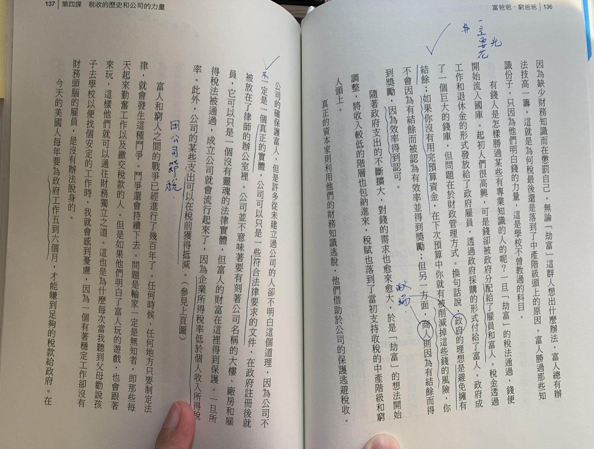

[投資] 社會價值 v.s 會滾動的現金流 | Identity and Rich Dad Impression
Status: Published
打理自已的事: 自已的資產欄
此次心得是來自<富爸爸，窮爸爸>一書中的片段內容，分享於大家。作者常說打理自已的事業時，其意思就是建立自已強的大「資產欄」。目的是
只要有任何一塊錢流進你的資產，就不要讓它流走
你這樣想吧，這一塊錢落進你的資產欄，它就是你的雇員了。關於錢，最美妙的是，它能一天24小時不斷地工作，並為你的子孫服務。
如果想致富，就需要學習財務知識。 首先，必須先明白資產與負債的區別，並且購持續買資產
在我觀察的存股部落格中<孫悟天>也都是提倡這個觀念，簡單說也就是錢生錢的最基礎概念。
千萬記住：生出來的利息、配股，都不能動
它們的存在是為了下一張股票的生存的。
窮人和中產皆級的別差
當你的現金流增加時(開始滾動時)，你可以買一點奢侈品，一個重要的區別是富人最後才買奢侈品，而窮人和中產階級則傾向先買奢侈品。他們會先買下諸如大房子(注意他是說大房子)、皮衣、珠寶、遊艇等奢侈品，因為他們想看上去很富有。
社會的虛榮感
我自個兒想想，因為人們身上有著社會的虛榮感，造就人們的普遍認知。
即使古代的哲人早已道盡生命的過程，解答人生的困惑，只是我仍然惑於現實的虛榮，無法放下，所以焦慮不堪
by 無垢劇場-林麗珍
他們看上去的確很富有，但已深陷貸款的陷阱之中。那些有錢二代繼承遺產的人，都是父祖輩先建立他們的資產，然後才用資產所產生的的收入購買奢侈品；窮人和中產則用他們的血汗錢，和原本要留給孩子們的遺產去購買奢侈品。
奢侈品的正當性
真正的奢侈品，應該是來自投資和積累真正的資產獎勵。比如說投資獲得的額外收入，可以使用這筆錢去購買奢侈品。這樣的循環，證明了理財效益，也意味自已能夠用自已的財務知識得到它，因為缺乏財務知識，或是執行力不足都是在懲罰自已。
劫富說
劫富可以說是針對富人的稅人，政府希望以控制金錢的流向以補助中產以下階層。殊不知富人終究是有各種節稅的方法，讓稅法影響不到自已的財產。
這邊舉個例子：一旦稅法通過，錢便開始流入國庫。起初人們很高興，可是錢郤被政府分配了雇員和富人。怎麼說呢？稅金透過工作和退休金的形式發給了政府雇員，另外透過政府的採購的形式付給了富人。政府是形成了一個巨大的錢庫，但財政的管理方式，讓錢又回流於富人。舉個專案預算的例子，政府的理想是避免擁有結餘，如果你沒有用完預用款，在下次預算你就會被削減這些錢的風險。因為你不會因為有結餘款被認為有效率並得到獎勵，此時商人則因為有結餘而得到獎勵。
公司保護富人
公司的確是保護富人，一般人不明白這個道理。因為公司不一定是真正的實體，另一種說法它可以只是一種形式上符合法律要求的文件，符合需求後即可註冊為公司。正因為企業所得稅率低於個人收入所得稅率，所以公司可以在稅前就先獲得抵減。
結論：
我個人十分認同資產欄造就的現金流，對此也解決現況是否採取購房行動。另外我想提到的是只要是為人，就會有意識，思想讓我們有存在感，我們常被需要被受認同和肯定(自我認同 identity)，如果自由意志思被社會牽著走，那又何嘗成為人呢？
這邊順道分享NLP稱為從屬等級（Logical Level）。這東西是心靈成長課裡我個人獲益最多的一個模型，用這套模型去觀察他人或是檢視自我的內心狀態
這是一張NLP, 心理學模型，其中自我認同（Identity）是很高的部份僅次於你的靈性。一旦沒有自我就會面臨種種負面情緒
書中用很嚴肅的口吻談劫富的觀點，富人和窮人之間的戰爭已經進了幾百年了。任何時間，只要制定稅法就會這種鬥爭。問題是輸家一定是無知者，即是那些每天起來勤奮工作以及繳稅的人。所以趕緊經營你的資產欄吧
